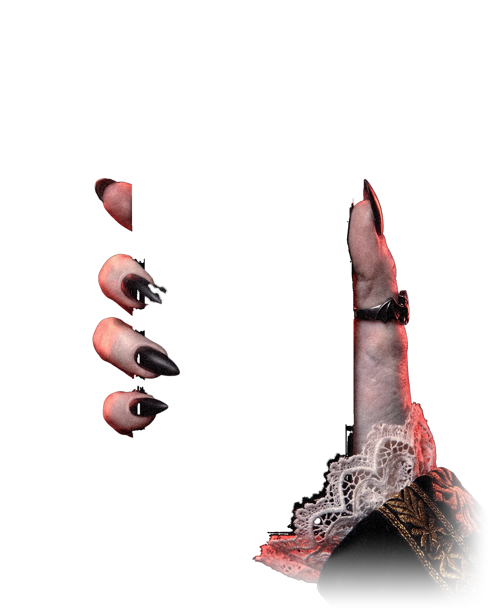
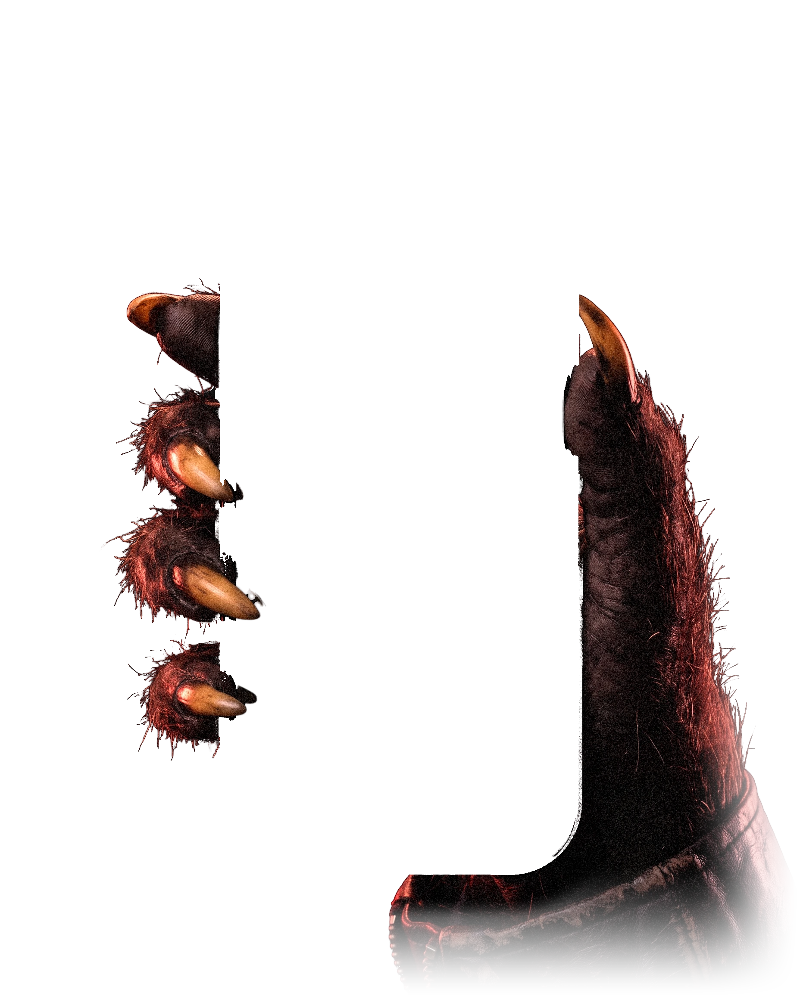
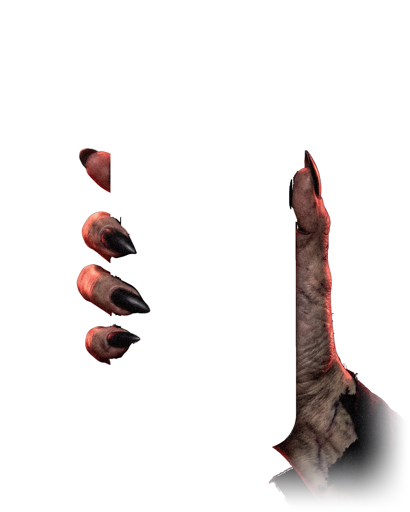
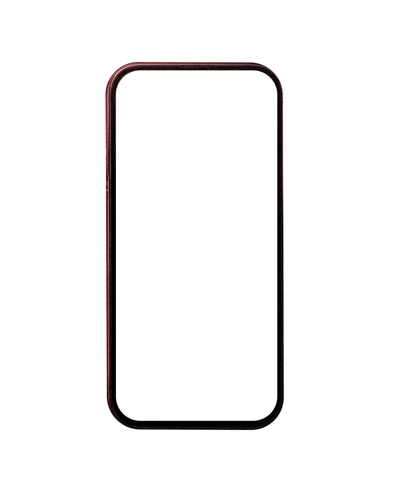
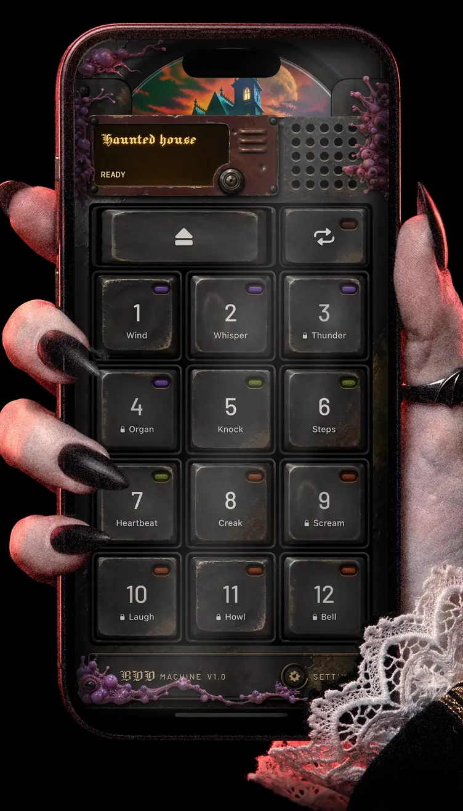
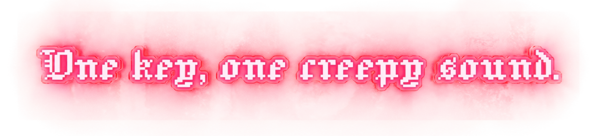
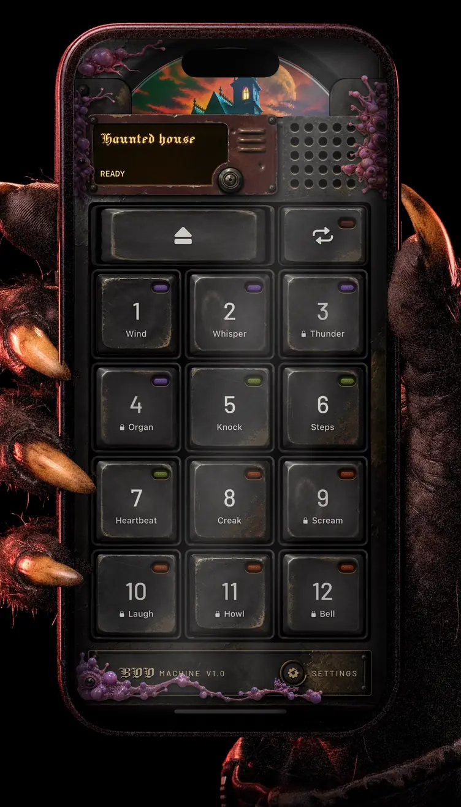
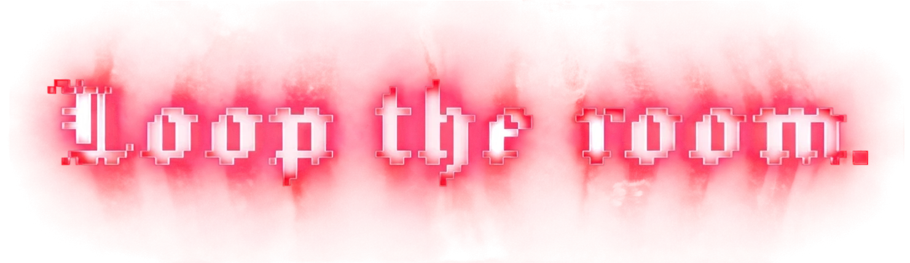
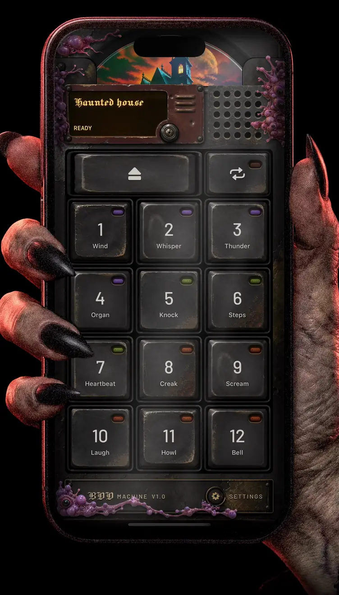
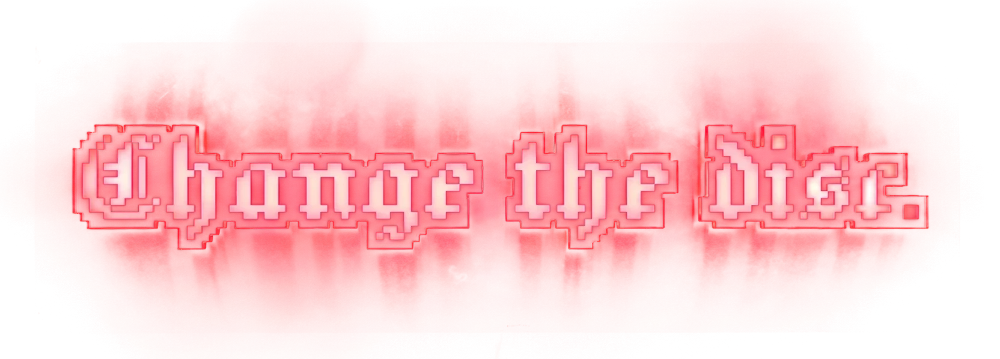

One key, one creepy sound.

Tap Wind, and cold creeps
across the floor.Tap Whisper. Tap Knock.
Who’s at the door?Haunted house:
twelve sounds on one disc.Six play for free. Tap one,
if you’ll take the risk.

Loop the room.

Hit Repeat,
and the sounds won’t stop:Wind, then Whisper,
then Knock on top.Put the phone down.
The house breathes onall party long,
till the guests are gone.Tap a key again,
and that sound is done;the rest keep haunting,
one by one.

Change the disc.

Press Eject.
Three discs rise into view:Haunted house, Creature feature,and The coven too.Load one, and the player
changes its face:new art behind the glass,
new sounds in place.One purchase unlocks all,
even discs to come.No ads. No subscription.
Pay once. Done.